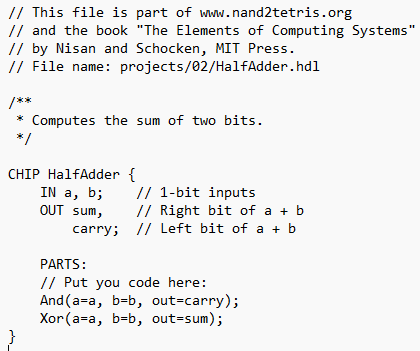
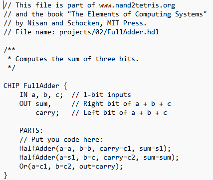
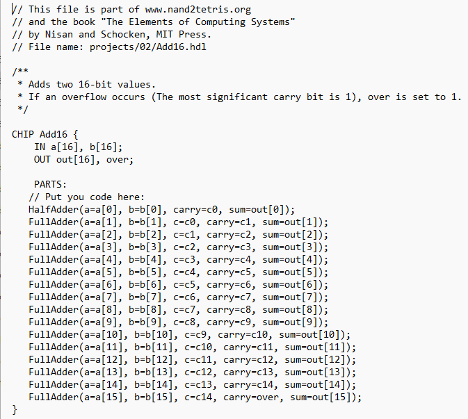

Posted on: 5/March/2025
Today's LeetCode question was an interesting one—perform addition without using the + or - operator.
At first, I was completely stunned. What kind of question is this? And worse, what if this comes up in an interview? I had a gut feeling it had something to do with bit manipulation, and sure enough, that was the topic tagged in the problem. But I had no clue where to start—I had completely forgotten how adders work in Computer Systems.
Looking through the discussions, I saw some people using sum([a, b]), which felt almost too
straightforward.
But I still wanted to attempt the bit manipulation approach, so I referred back to my old Computer
Systems coursework,
where I wrote about half-adders, full-adders, and 16-bit adders.
Here are some relevant images from my previous coursework:



From these, I recalled that:
xor is used for addition.and is used to determine the carry.With this in mind, I realized the solution must involve repeatedly applying XOR and AND to simulate addition.
In Python, working with binary numbers bit by bit was tricky. Using bin(a) wasn’t the solution,
since it converts numbers to strings.
After some trial and error (and checking the solution page 😅), I found that the approach was actually quite simple:
xor to add the numbers without carrying.and to find the carry and shift it left.The issue in Python is that numbers can exceed 32 bits, causing the carry to keep shifting indefinitely. To prevent this, we apply a mask to keep the result within a fixed bit size (12 bits in this case).
class Solution:
def getSum(self, a: int, b: int) -> int:
# Perform addition using XOR and recursively shift the carry
mask = 0b111111111111 # 12-bit mask (sufficient for range -1000 to 1000)
MAX = 0b011111111111 # Max positive number within 12 bits
if b == 0:
return a if a <= MAX else ~(a ^ mask)
return self.getSum((a ^ b) & mask, ((a & b) << 1) & mask)Honestly, I can only hope I never get this question in an interview. But at least now I
understand the concept
and can explain it if needed. Or I can just use sum([a, b]) and hope the interviewer doesn’t
mind. 😆
Until next time!